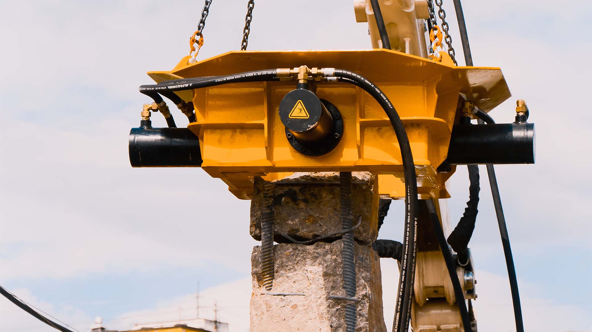
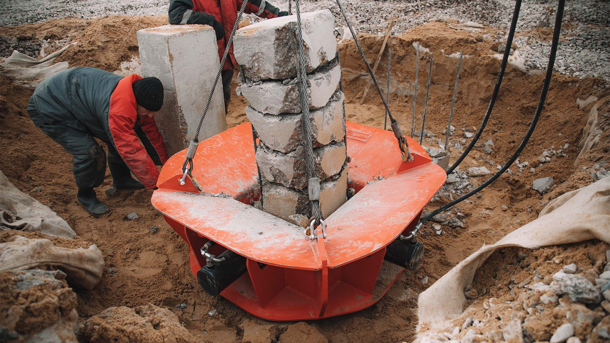

Фундаменты, возводимые с использованием свай, бывают:
- Забивными;
- Буронабивными;
- Винтовыми.
Какой бы вид фундамента не рассматривался, итог его обустройства одинаков – сваи располагаются в грунте, а их верхушки остаются над землей. Глубина погружения опор, как и их высота над уровнем земли, зафиксирована в проектных документах.
У грамотно сформированного свайного фундамента верхние части опор должны находиться на одинаковом уровне. Однако добиться этого практически невозможно. Обычно верхушки погруженных свай имеют существенный разброс, достигающий десятки сантиметров, что может пагубно сказаться на прочности постройки. Поэтому рабочие обязаны добиться максимально ровного расположения свай при помощи их срезки.
Основные способы срезки свайных опор
Срубку оголовков выполняют ручным или механическим способом. При ручном способе работа выполняется отбойным молотком, шлифовальной машиной или специальными ножницами для арматуры. При механическом способе задействуют спецтехнику.
Ручной метод срубки финансово выгоден, поэтому часто используется на частных строительных объектах с небольшим бюджетом. Однако из-за его низкой производительности, трудозатратности и продолжительности применять его на крупных стройках нецелесообразно. Поэтому на больших строительных объектах используется механический способ срубки свай.
Особенности срезки свай из металла
Металлические сваи используются для возведения винтовых или забивных фундаментов, которые обустраиваются при строительстве небольших сооружений. Выравнивание свай из металла состоит из следующих этапов:
- Нанесение на все сваи разметки по уровню. Чтобы добиться максимальной точности, используют специальные измерительные приборы.
- Нанесение ровной насечки по отмеченному уровню. Насечка глубиной в несколько миллиметров делается болгаркой.
- Срезание оголовок свай по нанесенной разметке. Используют специализированные резаки.
- Обрезание металлических опор таким способом характеризуется простотой и низкой трудоемкостью.
Особенности срубки бетонных свай
Выравнивание бетонных свай – более сложный и трудоемкий процесс. Наносится разметка по тому же принципу, что был описан ранее. Однако ввиду специфики конструкции насечки наносятся немного выше, чем указано в проектных документах. Во время вырубки бетонной сваи велик риск образования расколов и трещин ниже обозначенного уровня.
Бетон срубается меняющимися встречными движениями молота. Срубка должна привести к тому, чтобы разрез удаленной части приобрел конусообразный вид. После среза бетона на свае остаются выпирающие части арматуры, которые нужно ликвидировать шлифовальной машинкой.
Выполнить срубку бетонной сваи можно с помощью гидравлических ножниц. В данном случае на железобетонной опоре размещают насадку и аккуратно откусывают небольшие части опоры. Ножницами можно получить более ровный край среза и минимизировать риск образования трещин на монолите.
Механический способ обработки свай
Данная технология применяется на крупных строительных объектах, так как подразумевается использование специализированного оборудования. Работа со спецоборудованием требует навыков и высокой квалификации строителей.
Для механической срезки свай используют:
- Фрезы.
- Сваерезки (сваескусыватели) с гидравлическим приводом.
- Резаки с открытым пламенем.
- Сваерезы ударного действия с дополнительным использованием заряда пороха.
Выбор технологии для срубки голов свай зависит от большого количества факторов. Учитывается объем работ, особенности фундамента, технические и финансовые возможности застройщика. Перед тем как выбрать технологию срезки свай, необходимо внимательно изучить ее особенности выполнения.
Остались вопросы? Задайте их нашему специалисту.